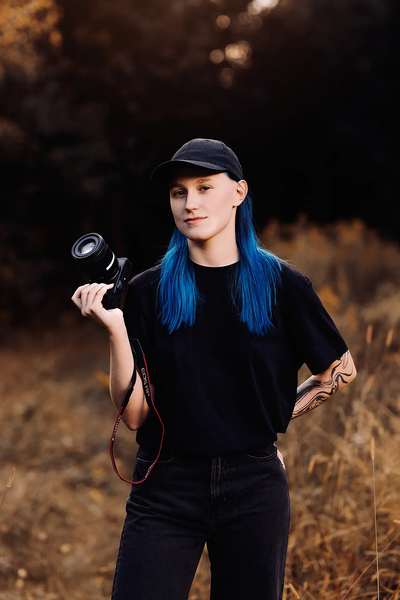

4 fotografie ve Fine Art stylu
Váš výběr z náhledů
fotografie pro osobní použití
cca 45 minut focení
8 fotografií ve Fine Art stylu
Váš výběr z náhledů
fotografie pro osobní použití
cca 1 hodina focení
12 fotografií ve Fine Art stylu
Váš výběr z náhledů
fotografie pro osobní použití
cca 1,5 hodiny focení
Objednáním se na focení stvrzujete, že jste seznámeni s obchodními podmínkami a berete na vědomí styl mé práce.
Jmenuji se Tereza, ale říkají mi Roze. Jsem fotografka, která se věnuje focením zvířat, hlavně psů a koní.
K focení jsem se dostala v roce 2017, při nástupu na střední uměleckou školu, která se nachází v Prostějově, odkud také pocházím. Nejdříve jsem fotila pouze v rámci školy se zapůjčenými zrcadlovkami. Focení mě ale natolik chytlo, že jsem si v létě 2019 pořídila svojí první zrcadlovku a to Canon EOS 600D, se kterou jsem fotila až do roku 2023. Ve svých začátcích jsem se věnovala převážně focení přírody, krajin a portrétům.
Zhruba v roce 2022 jsem se náhodou dostala k focení zvířat, nejdříve psů a poté i koní. Zjistila jsem, že to je něco co mě velice naplňuje a baví a tak jsem se k tomu chtěla věnovat dál a hlavně více aktivně. Ještě v témž roce jsem nafotila například Great Global Greyhound walk v Prostějově, který pořádala organizace Chrti v nouzi. Navázala jsem také spolupráci s útulkem Voříšek, pro který jsem nafotila kalendář na rok 2024 a 2026. V roce 2023 jsem začala jezdit fotit na koňské závody.
Momentálně stále dělám to co mě baví a snažím se v tom stále víc a více zlepšovat, abych Vám mohla poskytnout ty nejhezčí záběry a vzpomínky Vašich mazlíčků. Mým hlavním cílem je, abyste byli maximálně spokojeni.
